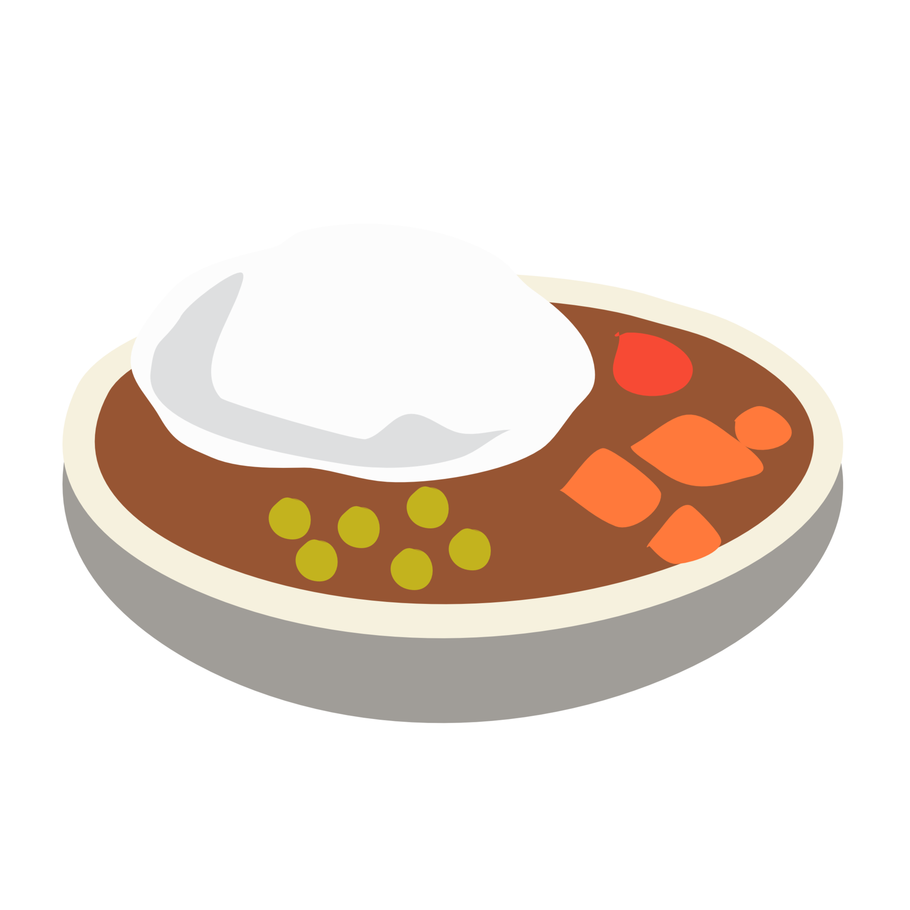

Spaghetti Aglio e Olio

Description
This classic Italian pasta dish is simple yet flavorful, made with garlic, olive oil, and a touch of chili flakes.
It's quick to prepare and perfect for a light but satisfying meal.
Ingredients
- 200g spaghetti
- 4 cloves garlic (thinly sliced)
- 4 tbsp olive oil
- 1 tsp red chili flakes
- Fresh parsley (chopped)
- Salt (to taste)
Steps
- Cook spaghetti in salted boiling water until al dente.
- Heat olive oil in a pan, add sliced garlic and chili flakes.
- Drain spaghetti (reserve some pasta water) and add to the pan.
- Toss well, adding a little pasta water if needed.
- Garnish with chopped parsley and serve hot.
Home